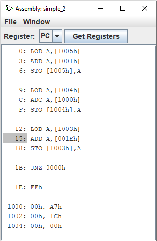

צופה להרכבה
חלון ה-Assembly viewer מציג ערך כתובת המאוחסן באוגר במעגל הנוכחי, יחד עם הוראת שפת ההרכבה בכתובת זו.

בכל פעם שהערך המאוחסן ברישום משתנה, הכתובת החדשה מודגשת במציג ה-Assembly.
בחר את הרישום לתצוגה וטען קובץ טקסט המכיל את הוראות שפת ההרכבה.
לשם הקובץ חייב להיות סיומת .lss. קובץ טקסט לדוגמה הוא
0: LOD A,[1005h]
3: ADD A,[1001h]
6: STO [1005h],A
9: LOD A,[1004h]
C: ADC A,[1000h]
F: STO [1004h],A
12: LOD A,[1003h]
15: ADD A,[001Eh]
18: STO [1003h],A
1B: JNZ 0000h
1E: FFh
1000: 00h, A7h
1002: 00h, 1Ch
1004: 00h, 00h
כתובות ההוראות בקובץ הטקסט הן בהקסדצימליות ללא אפסים מובילים ועם לפחות מוביל אחד רווח בתחילת השורה, ואחריו נקודתיים והוראת שפת ההרכבה.
לחיצה על F2 בחלון ההרכבה מקדימה את השעון בשני תקתוקים.